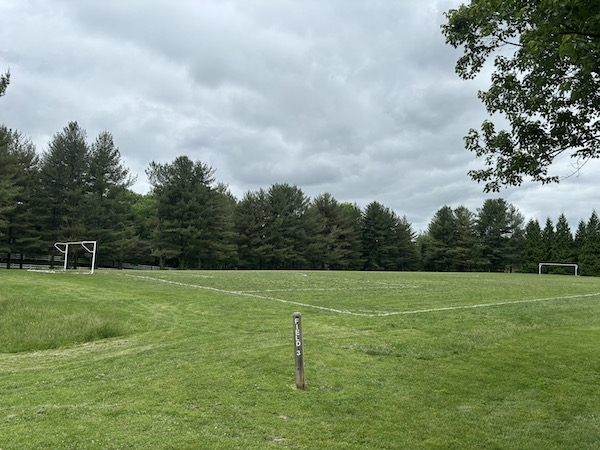
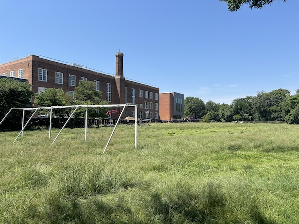
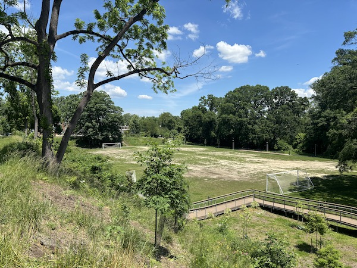
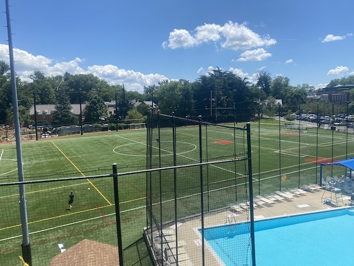
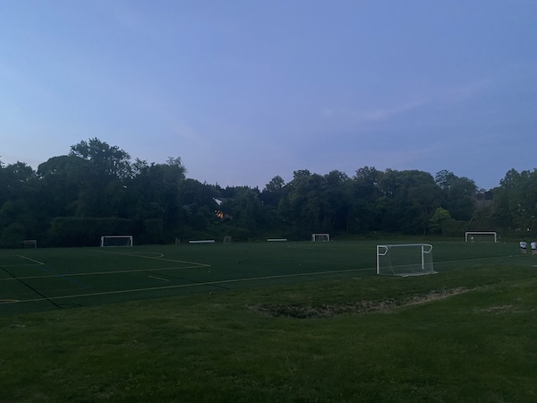
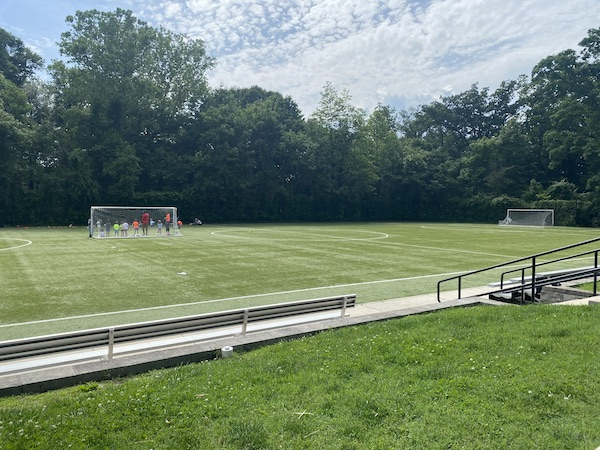

Marie Reed - 7/10
- Transportation: 1 minute walk from 18 St NW & California St NW bus stop, 20 minute walk from Woodley Park Metro stop
- Bathrooms: Available when Aquatic Center is open
- Water: Outdoor fountains on site
- Surface: Turf
- Number: 1
- Availability: See Marie Reed website
- Additional Notes: Soccer field has lights, but the field and goals are smaller than regulation size. The Recreation Center also houses 2 tennis courts

Avenel Local Park - 4/10
- Transport: 21 minute drive from Sidwell
- Bathrooms: Porta Potty bathrooms on site
- Water: No water fountains
- Surface: Grass
- Number: 3
- Availability: No reservations required
- Additional notes: 1 of the 3 fields is currently under renovation and cannot be used

Francis Field - 0/10
- Transport: 16 minute walk from Dupont Circle North Metro station
- Bathrooms: Available when pool is open
- Water: Available when pool is open
- Surface: Grass
- Number: 1
- Availability: See website
- Additional notes: The Francis Pool is temporarily closed, and it seems that the field is not being maintained either.

Hardy Field - 5/10
- Transport: 2 minute walk from Foxhall Rd NW & Greenwich Pw NW bus stop
- Bathrooms: Yes
- Water: No working water fountains
- Surface: Grass
- Number: 1
- Availability: See Hardy Recreation Center website
- Additional notes: The Recreation Center also has an outdoor basketball court

Hearst Field - 5/10
- Transport: 5 minute walk from Wisconsin Av NW & Rodman St NW bus stop, 20 minute walk from Tenleytown - AU Metro station
- Bathrooms: Available when Aquatic Center opens
- Water: Outdoor fountains do not work
- Surface: Grass
- Number: 1
- Availability: Reservations required for organized groups
- Additional notes: The Recreation Center also has 2 tennis courts and a swimming pool

Jelleff Field - 4/10
- Transport: 3 minute walk from Wisconsin Av NW & R St NW bus stop
- Bathrooms: Available when Recreation Center is open
- Water: Fountains available outside
- Surface: Turf
- Number: 1
- Availability: Maret’s sports teams often practice on this field, so reservations are often required
- Additional notes: The Recreation Center has a swimming pool, and there are basketball courts inside.

Linway Terrace Park - 6/10
- Transport: 22 minute drive from Sidwell
- Bathrooms: Not available
- Water: Not available
- Surface: Turf
- Number: 1
- See website
- Additional notes: N/A

Palisades Field - 6/10
- Transport: 3 minute walk from MacArthur Blvd & Arizona Av NW bus stop
- Bathrooms: Not available
- Water: Not available
- Surface: Turf
- Number: 1
- See website
- Additional notes: N/A